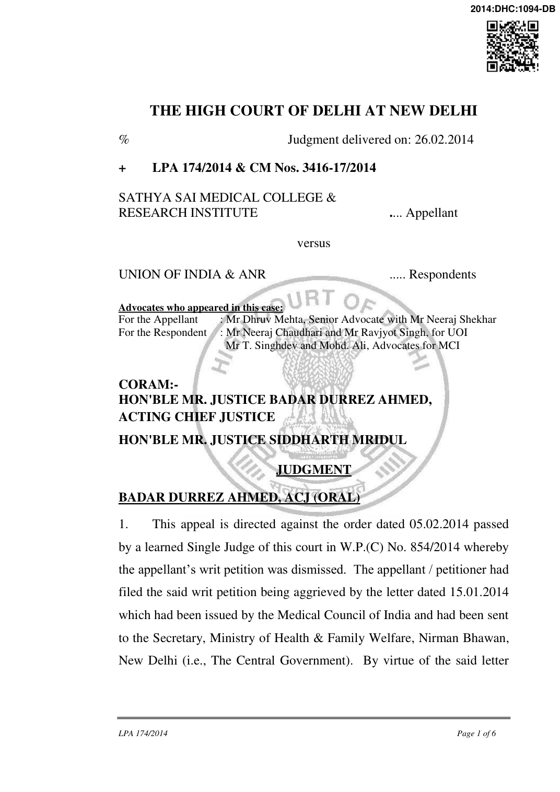

the Medical Council of India recommended the return of the Scheme submitted by the appellant for starting Post Graduate Courses in the following disciplines:- “1. MD (Anaesthesia)
- MD (General Medicine)
- MS (General Surgery)
- MS (ENT)

- MS (Orthopaedics)
- MS (Ophthalmology)
- MD (DVL)
- MS (OBG)
- MD (TB & Respiratory Medicine)
- MD (Paediatrics)
- MD (Radiology)”
- We find that the learned Single Judge in the impugned order in the very first paragraph has noted that the MCI had refused to grant recommendation to the petitioner - college for starting Post Graduate Medical Courses in the above mentioned 11 specialties under Section 10A of the India Medical Council Act, 1956 for the Academic Session 2014-15 on the specific ground that its “MBBS Course is not yet recognized by the Council”.
- The learned counsel for the appellant points out that by virtue of the Notification dated 27.11.2013 issued under Section 11 of the said Act, the MBBS Courses for the Academic Sessions beginning 2008-09 upto 2012-13 have been recognized. It is only in respect of the Academic Session 2013-14 that the MBBS Course has not been recognized by virtue of the letter dated 17.10.2013 which was the subject matter of a writ petition filed in the Supreme Court but which had been withdrawn in view of the fact that the Academic Session had already gone.
- The learned counsel appearing on behalf of the Union of India submitted that, in fact, the writ petition was pre-mature in view of the provisions of Section 10A(4) of the Indian Medical Council Act, 1956

which reads as under:- “4. The Central Government may, after considering the scheme and the recommendations of the Council under sub-section (3) and after obtaining, where necessary, such other particulars as may be considered necessary by it from the person or college concerned, and having regard to the factors referred to in sub-section (7), either approve (with such conditions, if any, as it may consider necessary) or disapprove the scheme and any such approval shall be a permission under subsection (1): Provided that no scheme shall be disapproved by the Central Government except after giving the person or college concerned a reasonable opportunity of being heard: Provided further that nothing in this sub section shall prevent any person or medical college whose scheme has not been approved by the Central Government to submit a fresh scheme and the provisions of this section shall apply to such scheme, as if such scheme has been submitted for the first time under sub-section (2).”
- He further submitted that for the purposes of granting an opportunity of being heard to the colleges, such as the appellant, as required under Section 10A(4) of the said Act, the Central Government has constituted a Committee by virtue of an office order dated 18.02.2014. The said office order reads as under:- “No.U.12012/7/2014- ME (P.II) Government of India Ministry of Health & Family Welfare (Department of Health and Family Welfare)

**** Nirman Bhawan, New Delhi, Dated the 18th February, 2014
OFFICE ORDER Subject: Constitution of Committee for grant of hearing to Medical Colleges for starting/increase of seats in postgraduate courses - regarding..... In order to grant opportunity of being heard under Section 10(A)(4)(1) of 1MC Act, 1956 before disapproving the schemes submitted by Medical Colleges for establishment of new medical college/starting or increase of seats in Undergraduate & Postgraduate courses, it has been decided to constitute a committee with following composition: 1 . Dr. S.Y. Kothari, Spl. DG, Dte. GHS: Chairman 2 . Prof. A.K. Aggarwal, MAMC, New Delhi: Member 3 . Prof. G.K. Sharma, LHMC, New Delhi: Member 4 . Shri Sube Singh, Director(ME), M/o H&FW : Members
- The Committee will grant hearing to such applicant institutions whose schemes/applications have been recommended for disapproval by the Medical Council of India to the Central Govt.
- The members shall not be entitled for any additional remuneration for this work. 4 This issues with the approval of Secretary, Health & Family Welfare, Govt. of India.

(Manoj Kumar Jha) Under Secretary to the Govt. of India Ph.23061342”
- We agree with the learned counsel for the Union of India that the petition itself was pre-mature and the learned Single Judge ought to have disposed of the same as such. Under the provisions of Section 10A, the Medical Council of India is only a recommendatory body and it is for the Central Government to accept and reject the recommendation. At the present moment it is only the recommendation of the Medical Council of India which has been forwarded to the Central Government by virtue of the impugned letter dated 15.01.2014. It is open to the Central Government to accept or reject the said recommendation and it is also clear that any scheme can only be disapproved by the Central Government after giving the person or the college concerned a reasonable opportunity of being heard. It is for that purpose that the office order dated 18.02.2014 was issued.
- Consequently, we set aside the impugned order and hold that the writ petition filed by the petitioner was pre-mature. As per the office order dated 18.02.2014, it is clear that the Committee will grant hearing to such applicant institutions whose schemes/applications have been recommended for disapproval by the Medical Council of India to the Central Government. For that purpose, it is open to the appellant to submit its representation before the Central Government within a week. The learned counsel for the Union of India also states that the last date for grant of permission/recommendation has been extended to upto 15.04.2014. Therefore, it is incumbent on the Central Government to

take a decision prior to that date as expeditiously as possible.
- The appeal stands disposed of accordingly.
- Dasti.
BADAR DURREZ AHMED, ACJ
SIDDHARTH MRIDUL, J
FEBRUARY 26, 2014 SU